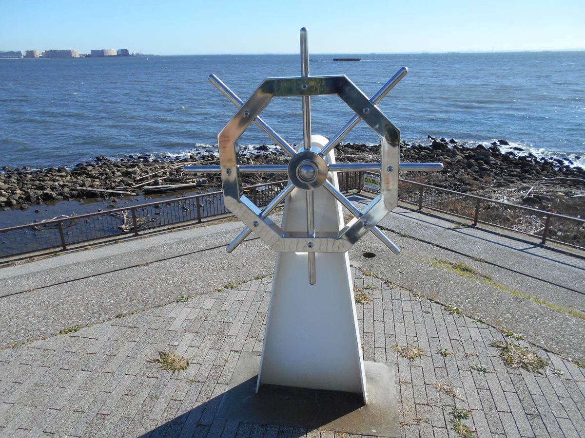
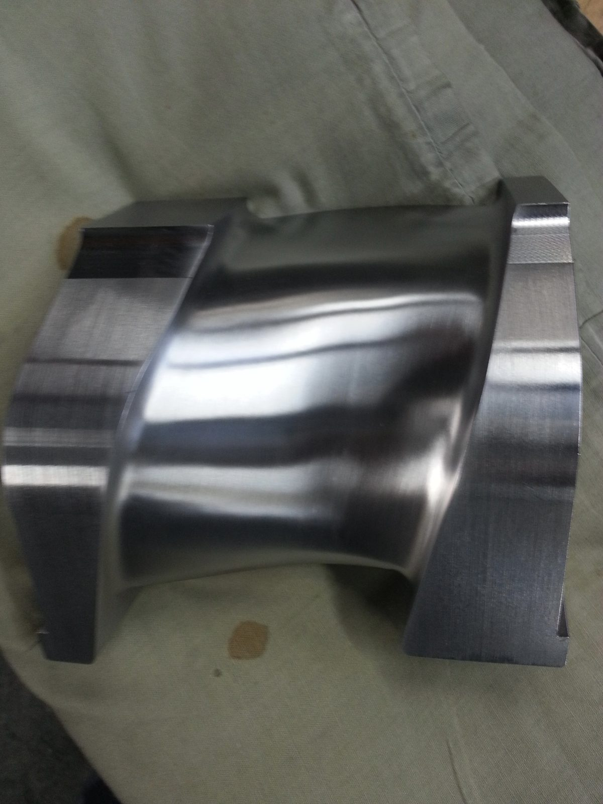
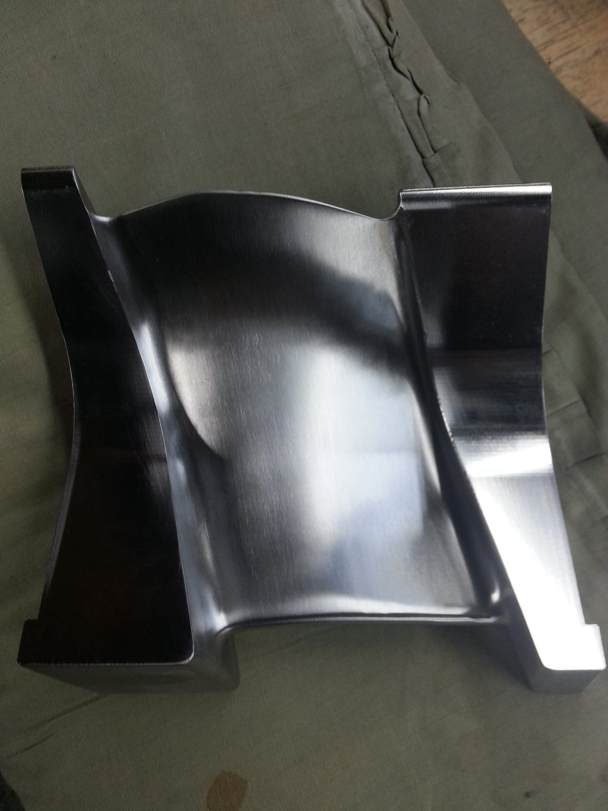
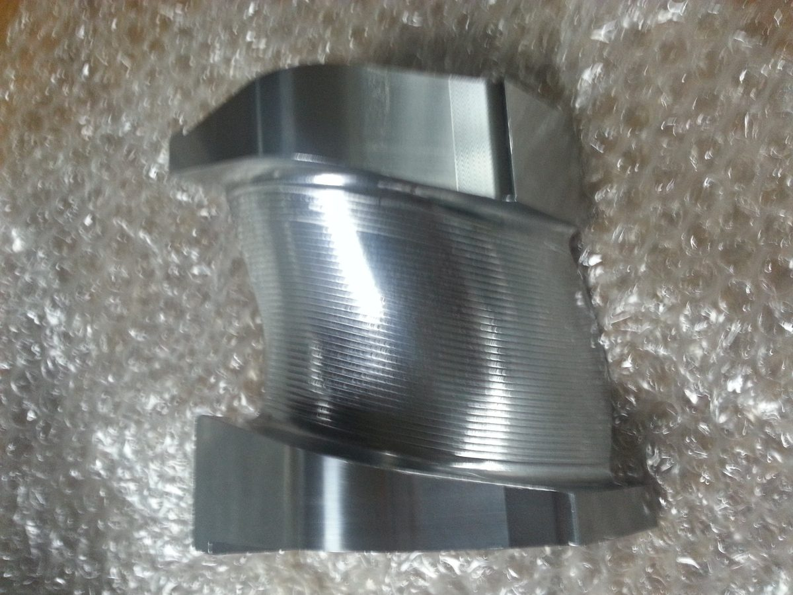
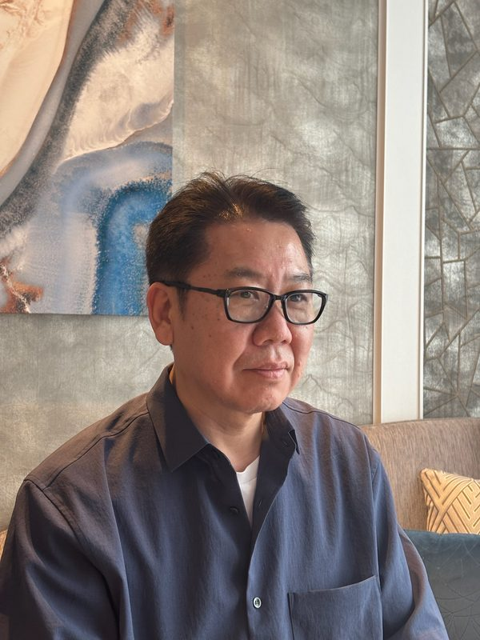

ステンレス・アルミ・真鍮・鉄。
バフ研磨・ベルト研磨・ヘアライン仕上げ・フレキ研磨まで、
川崎の小さな工場が一貫対応しています。
※ 営業・勧誘のお電話はお断りしています

材質・形状・仕上がりの要望に合わせ、最適な研磨方法を選定します。複雑な形状や一品一点の加工も承ります。
精密機器の部品からエネルギー設備の構造材、楽器・工芸品の鏡面仕上げまで。素材と用途によって最適解は変わります。



1967 年、川崎区で金属研磨を営む小さな工場として歩みはじめました。創業以来、熟練の職人技による手作業と機械研磨を融合させ、ステンレス・アルミ・鉄・真鍮・銅・チタンといったあらゆる金属の表面処理に取り組んでいます。
タービンブレードの鏡面仕上げから展示車のアルミボンネット、エレベーターの真鍮額縁の修復まで——機械化では届かない曲面、一点ものの装飾、短納期の補修は、職人の手と目でなければ出せない仕上がりがあります。図面のないお問い合わせ、試作 1 点のご相談もお気軽にどうぞ。
「もう一度この輝きを見たい」という期待に応えること。それが私たちの仕事です。

全国各地からのご依頼に対応しています。まずはお気軽にご相談ください。
お見積り無料。お電話・フォームどちらからでも受け付けております。
図面がない状態でも、ご要望をお聞かせいただければ最適な仕上げをご提案します。
※ 営業・勧誘のお電話はお断りしています